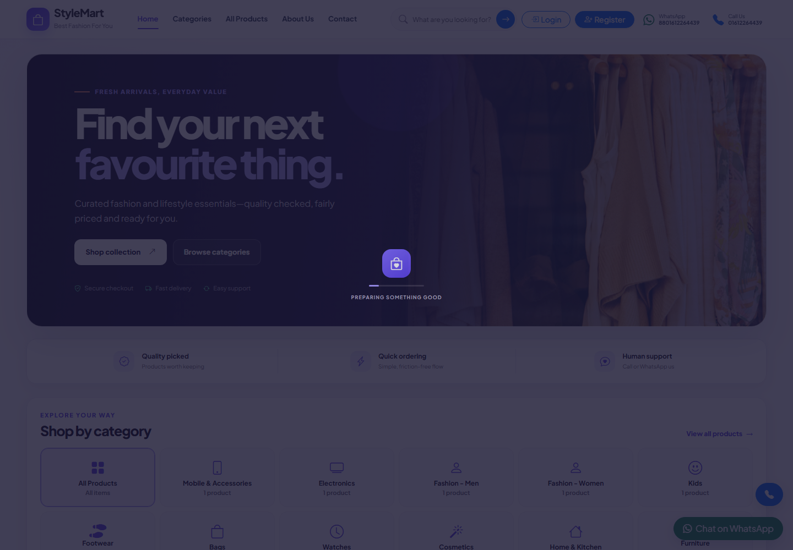
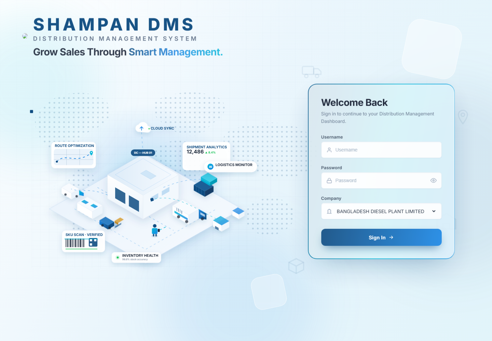
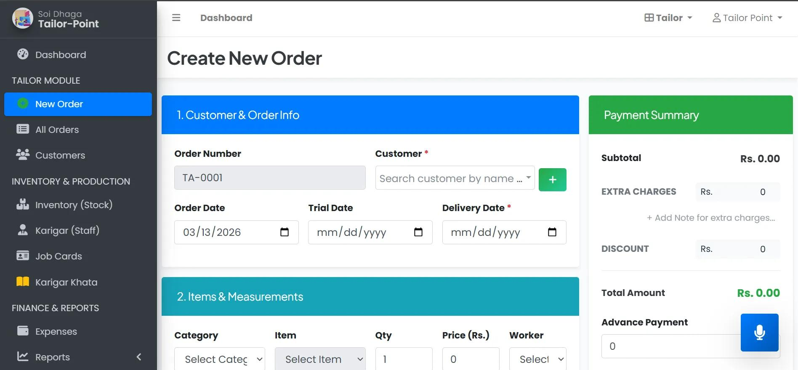
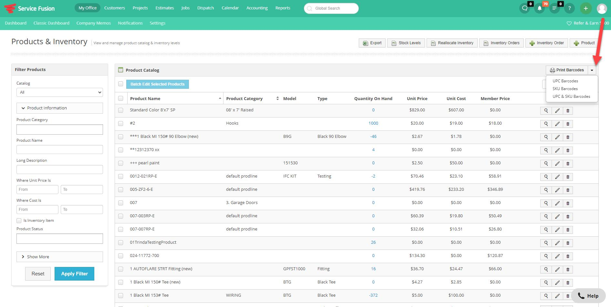
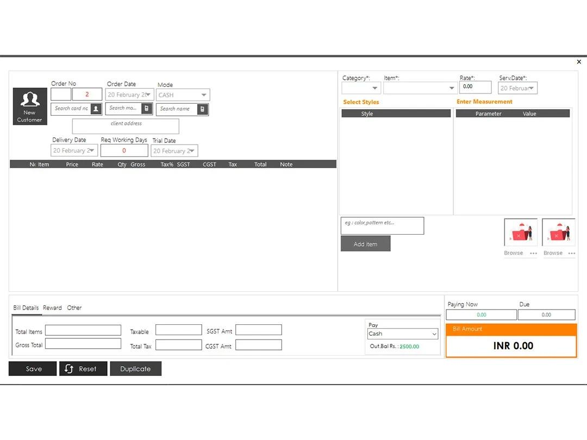

Understand
I translate client requirements and operational rules into clear, implementable software workflows.
.NET SOFTWARE DEVELOPER · DHAKA, BANGLADESH
Building Reliable Business Applications with .NET
I develop and maintain business-focused web applications using C#, ASP.NET MVC, SQL Server, and modern web technologies, with hands-on experience in enterprise workflows, reporting, and production support.
From Intern to .NET Software Developer | Two Promotions at Symphony Softtech Ltd.
public sealed class BusinessSolution
{
public async Task<Result> Build(
Requirement requirement)
{
var insight = Analyze(requirement);
var system = Design(insight);
return await Deliver(system);
}
}01 / About
I am Rakibul Islam Tusar, a .NET Software Developer at Symphony Softtech Ltd. My professional journey began in January 2025 as a Software Developer Intern. After three months, I was promoted to Junior Software Developer in April 2025, followed by another promotion to .NET Software Developer in June 2026.
I work on enterprise business applications involving order management, ERP workflows, database operations, pricing calculations, reporting, data migration, and production support. My primary expertise includes C#, ASP.NET MVC, ASP.NET Core, SQL Server, Entity Framework, Dapper, ADO.NET, and Kendo UI.
I enjoy solving real business problems, understanding complex workflows, improving existing systems, and developing maintainable software solutions.
I translate client requirements and operational rules into clear, implementable software workflows.
I connect backend logic, relational data and responsive interfaces into maintainable business applications.
I debug legacy systems, refine calculations, improve usability and support applications in production.
02 / Experience
Symphony Softtech Ltd. Current Role
Promoted to .NET Software Developer in June 2026, continuing to contribute to enterprise software development, business workflow implementation, database-driven applications, system enhancements, and production support.
Symphony Softtech Ltd.
Promoted from Software Developer Intern to Junior Software Developer after three months. Contributed to business application development, implementing new features, fixing application issues, working with SQL Server databases, and supporting existing enterprise software systems.
Symphony Softtech Ltd.
Joined Symphony Softtech Ltd. as a Software Developer Intern in January 2025, gaining practical experience with professional software development, ASP.NET applications, SQL Server databases, debugging, and collaborative development workflows.
US Software Limited
Completed an ASP.NET-focused scholarship internship, developing foundational knowledge of C#, ASP.NET web applications, SQL Server, and practical software development workflows.
TactSoft
Completed an industrial attachment program focused on practical exposure to software development, professional IT workflows, and industry-oriented learning.
Computer Technology
Shariatpur Polytechnic Institute · December 2023CGPA: 3.13 / 4.0003 / Selected projects
Architecture decisions, workflow design, and production-oriented implementation—shown with enough technical depth to explain how each system works.
Live demo available
I designed and built a modular commerce platform that connects the customer storefront with catalog, inventory, order, sales, and back-office workflows. The core challenge was not just displaying products—it was keeping every business action traceable, permission-aware, and consistent as an order moves through the system.
Public storefront link only. Administrative credentials are intentionally not published.

System architecture
I kept the application as a modular monolith: simpler to deploy and operate, while controllers, business services, repositories, and SQL remain deliberately separated. This gives the codebase a practical path toward module-by-module modernization without a risky rewrite.
Workflow analysis
Each step has an explicit owner and validation boundary. Stock-sensitive and multi-table updates are handled as transactions, while order status history provides an audit trail for operational decisions.
Security engineering
Separate customer and admin authorization, role/permission checks, and a global deny-by-default policy for unknown admin actions.
POST-only mutations, anti-forgery validation, local return URLs, request throttling, and controlled order-state transitions.
Parameterized Dapper persistence, transactional multi-table writes, externalized secrets, and bounded image decode/re-encode with server-generated names.
Admin audit filters, immutable status and inventory history, generic client errors, server-side logging, and versioned database migrations.
The hardened source and release package passed build, Razor precompile, local runtime, and dependency-advisory checks. The current public Somee deployment is an older build and does not yet include every hardening change; HTTPS, secret rotation, redeployment, and a final live VAPT retest remain required before describing production as fully secured.
In live use for 1+ year
A full distribution operations platform built for OSAKA and used in live operations for more than a year. I designed the system around company and branch context, role-controlled menus, master data, sales and purchase lifecycles, field operations, and management reporting. The solution later became the basis of a tailored demonstration for Bangladesh Diesel Plant.
Demo login details are shared privately with authorized reviewers and are not published here.

System architecture
The web portal follows an MVC and repository-based structure, while a separate ASP.NET Core API exposes the same distribution domains to mobile users. Shared data contracts connect both channels to company- and branch-aware SQL Server operations.
Authentication & authorization
Login combines user credentials with a selected company. The resulting user, company, token, and branch context are carried through claims/session and used to build an assigned menu and scope transactions.
Distribution workflow
The system manages both master and transactional data, so operational teams work from one connected source instead of disconnected sales, stock, route, and delivery records.
Production evidence
Used in day-to-day operations for more than one year, with strong stakeholder feedback.
A tailored demonstration version was recently prepared to present the same architecture for another diesel-industry workflow.
Operational data is transformed into business-ready reports and printable documents through the configured reporting layer.
Salespeople and delivery personnel use a dedicated mobile experience backed by the ASP.NET Core API.
Live across 12 branches
A production tailoring ERP used by Fit Elegance across 12 branches. I helped translate the complete physical workflow—customer order, fabric, measurement, design, trial, production, payment, transfer, and delivery—into one branch-aware operational system.



Interface screenshots are presented as portfolio evidence; sensitive business data is excluded.
Architecture
The platform separates the MVC web experience from a .NET 6 API and layered service/repository projects. Company, authenticated user, and active branch context flow into each operational request, while SQL transactions keep multi-record order and transfer writes consistent.
Order-to-delivery workflow
One order coordinates customer details, garment lines, fabric, measurements, style choices, making charges, trial and delivery commitments, production progress, settlement, and operational documents.
Multi-branch operations
Super-admin users can switch operational context and review consolidated activity, while user-to-branch mapping and assigned menus keep branch teams focused on the functions and records relevant to them.
My contribution & production impact
Implemented and refined ordering, pricing, discount, VAT, delivery scheduling, measurement, production, and printing behavior.
Supported migration of approximately 3,000 fabric records plus member and branch data into the operational system.
Improved fabric search and selection, order editing, factory documents, responsive workflows, and management visibility.
Supported the physical-server deployment used by twelve branches and continued production-oriented troubleshooting and refinement.
ERP workflow
Role: Workflow and validation development. Helped turn manual CAPEX controls into traceable asset lifecycle steps, including approved-budget checks, acquisition references, registration, employee assignment, and transfers.
04 / Capabilities
From requirement and data model to interface, authentication, reporting and deployment support.
C# · ASP.NET MVC · ASP.NET Core · .NET Framework · Web API · REST API Integration
Microsoft SQL Server · T-SQL · Stored Procedures · Entity Framework · Dapper · ADO.NET · Database Design · Data Migration
JavaScript · jQuery · Kendo UI · Razor Views · Bootstrap · HTML5 · CSS3
IIS · Git · Crystal Reports · Inno Setup · Visual Studio · Windows
05 / Contact
I’m open to .NET development opportunities, enterprise software projects, remote collaboration, and meaningful technical challenges. If you’re looking for a developer who understands both software engineering and real business workflows, let’s connect.